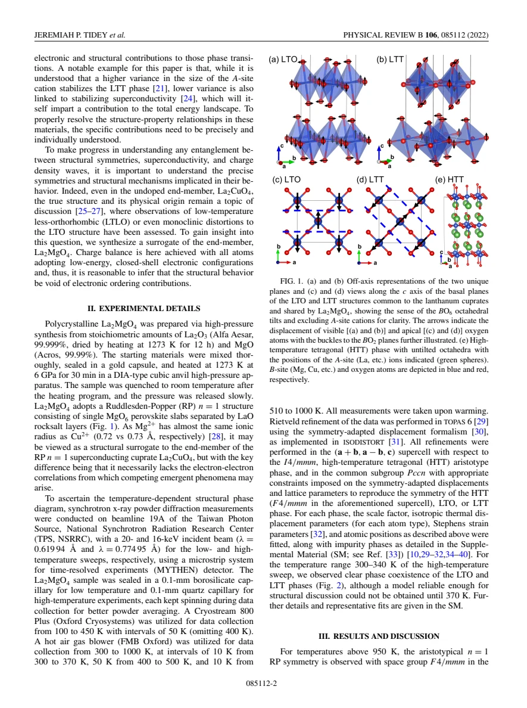
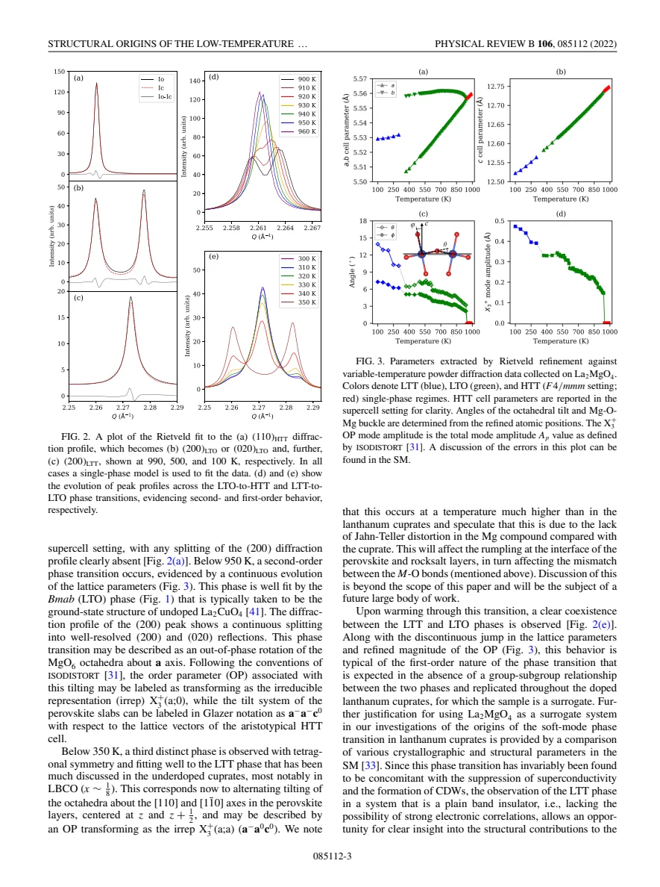
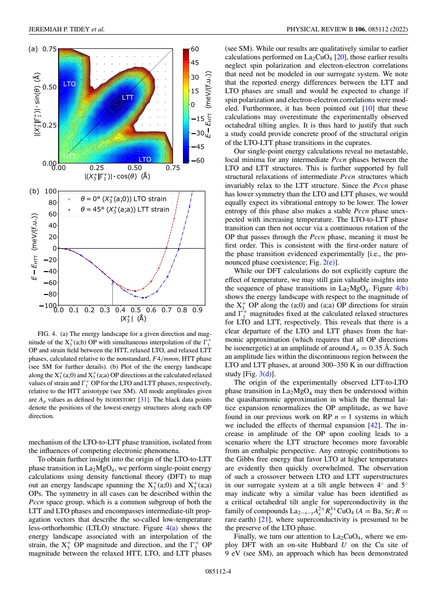

experiment and theory · Tidey · supplied source 2022
Structural origins of the low-temperature orthorhombic to low-temperature tetragonal phase transition in high-Tc cuprates
La₂MgO₄ reproduces LTO–LTT structural transitions without Cu electronic order, demonstrating a structural route to this transformation.
The question: Does the LTO–LTT transition require superconductivity or charge order?
Before you start: the few terms you need
- octahedral tilt: coordinated rotation of metal–oxygen octahedra
- LTO/LTT: distinct orientations and layer patterns of an existing tilt
- DFT energy landscape: calculated structural energy, not a measured finite-temperature free energy
See → explain → test
Understand it in four pictures.
Picture 1 / 4
Remove the Cu electronic degrees of freedom
Look for: Compare the structural analog with a cuprate.
Swipe across the picture to read every label, or enlarge it below.
- La₂CuO₄
- La₂MgO₄
An analog isolates a possible structural mechanism; it is not a complete electronic substitute.
Similar Mg²⁺ and Cu²⁺ sizes permit a useful structural control, but Mg does not reproduce Cu spin or superconducting physics.
Picture 2 / 4
Follow diffraction on warming
Look for: Read the high-temperature single peak, orthorhombic splitting and low-temperature tetragonal structure.
Swipe across the picture to read every label, or enlarge it below.
- Low-T tilted LTT
- Tilted LTO
- High-T untilted HTT
Teaching sequence on warming; coexistence near 300–340 K marks the first-order lower transition.
Tetragonal symmetry at low temperature does not mean that the octahedra become untilted.
Picture 3 / 4
Rotate the tilt direction
Look for: Compare tilt axes referenced to the Mg–O bond directions of the HTT plane.
Swipe across the picture to read every label, or enlarge it below.
- LTO: diagonal HTT tilt axis
- LTT: bond-axis HTT tilt
Projected teaching axes. LTT axes alternate between neighboring layers; the projection does not show that stacking.
LTO and LTT differ mainly in tilt orientation and stacking, rather than the presence versus absence of every bond distortion.
Picture 4 / 4
Combine data with an energy landscape
Look for: Compare observed discontinuity with calculated LTO and LTT minima.
Swipe across the picture to read every label, or enlarge it below.
- Coexistence and jump in data
- LTT-favored energy landscape
- Structural route without electronic order
No invented contour plot or calculated transition temperature.
The calculations support a structural first-order route but do not explicitly calculate the full finite-temperature transition.
Predict before revealing
An LTT transition occurs in band-insulating La₂MgO₄. What does this establish?
Choose an answer, then compare the reasoning.
The analog is an existence control for the structural mechanism, with clear limits on transfer to Cu electronic physics.
Read the answer
A structural route to LTT exists without Cu electronic order The analog is an existence control for the structural mechanism, with clear limits on transfer to Cu electronic physics.
Go deeper Follow the full argument
Why the magnesium analog matters
Tidey and colleagues synthesize La₂MgO₄ to disentangle structural and electronic ingredients of a transition familiar in lanthanum cuprates. Mg²⁺ has an ionic radius close to Cu²⁺, and the compound shares the single-layer Ruddlesden–Popper framework. Its closed-shell electronic configuration makes it a band insulator without the correlated Cu spins, superconductivity or charge-density-wave physics invoked for cuprates. High-pressure synthesis at about 6 GPa and 1273 K produces the structural analog. Finding an LTT phase in this system is a controlled existence argument: electronic stripe order is not necessary for such a structure to occur. It does not prove that electronic feedback is irrelevant in every cuprate, nor does it make the Mg material a model of Cu pairing.
The observed structural sequence
Synchrotron powder diffraction is measured on warming over approximately 100–1000 K. Above about 950 K the structure is the untilted high-temperature tetragonal archetype. Cooling below that scale gives the familiar low-temperature orthorhombic structure, with continuously developing peak splitting characteristic of a second-order transition. Below about 350 K, the sample adopts the low-temperature tetragonal tilted structure. The warming data show coexistence of LTO and LTT phases around 300–340 K and a discontinuity in refined parameters, supporting a first-order lower transition. The authors note limits to reliable single-phase refinement in the coexistence region. These details matter because a single unresolved peak is not enough to identify an untilted phase: symmetry, superstructure and refined displacement patterns must be considered together.
Keep the axis convention explicit
The LTO and LTT patterns both contain substantial octahedral tilting. Relative to the bond axes of the original HTT plane, LTO tilts about a diagonal direction, while LTT tilts about a bond direction with an orthogonal direction in the neighboring layer. The paper also uses a doubled, rotated supercell, so an axis label changes when the reference cell changes. Its symmetry-mode notation represents LTO by an order-parameter direction (a;0) and LTT by (a;a). Those are components in the chosen symmetry basis, rather than a claim that every oxygen displacement or every bond becomes identical. Tracking tilt direction, magnitude, in-plane strain and stacking separately prevents the common error of equating tetragonal symmetry with a flat, undistorted plane.
What the calculations add
The authors calculate structural energies over directions and magnitudes of the tilt order parameter, together with interpolated strain. The landscape contains LTO- and LTT-related minima but no stable intermediate Pccn minimum in their fully relaxed Mg calculations. Starting from intermediate structures leads to LTT, consistent with a first-order route rather than continuous rotation through a stable intermediate phase. At small amplitudes the directional energies are nearly equivalent; differences develop beyond an amplitude near 0.35 Å. The authors discuss a quasiharmonic picture in which thermal expansion changes the tilt amplitude, allowing the low-temperature LTT structure to become enthalpically favorable. These calculations do not explicitly include the complete finite-temperature entropy, so they support a mechanism and energy ordering rather than predict a fully calibrated experimental transition line.
How far the control transfers
For La₂MgO₄ the relaxed LTT energy is lower than LTO by about 11.2 meV per formula unit. The cuprate comparison is more delicate: calculations must account for Cu spin polarization and strong on-site correlations, and the calculated LTO–LTT energy difference in La₂CuO₄ is small relative to the accuracy required. Therefore the Mg energy difference should not be copied into a Cu phase diagram. The observed tilt angle around the Mg crossover is roughly 4–5°, relevant to previous structural discussions of superconductivity, but it is not a universal critical angle established for every cuprate. The central durable conclusion is narrower and strong: the lattice possesses a structural route to LTT without charge order or superconductivity. The influence of Cu electronic order on that route remains a separate question.
Translate the mathematics Key equations and symbol meanings
LTO: X₃⁺(a;0); LTT: X₃⁺(a;a)
Symbols: X₃⁺: symmetry mode of the HTT archetype; components specify its direction in the paper's basis.
Different directions of the same structural order parameter produce different tilt symmetries. These are not electronic order parameters.
ΔE = ELTT − ELTO ≈ −11.2 meV per formula unit (La₂MgO₄)
Symbols: E: relaxed calculated structural energy.
LTT is energetically favorable in the Mg calculation. This number is not a Cu energy scale or a full finite-temperature free-energy difference.
Read the evidence A guided look at the original figures

Open the full original page ↗

Open the full original page ↗

Open the full original page ↗
What this paper does—and does not—establish
- Mg is an electronic and magnetic control, not a superconducting cuprate.
- Mixed-phase refinement is limited near 300–340 K.
- Calculated cuprate energy differences require electronic-correlation treatment and cannot inherit the Mg values.
Explain it back.
Try answering aloud before opening the explanation.
Does LTT mean no tilt?
No. It is a tilted low-temperature tetragonal pattern with different tilt axes and layer stacking.
Are the diffraction measurements on cooling?
The reported scans are on warming; their coexistence and parameter jumps must be read with that protocol in mind.
Was finite-temperature entropy explicitly calculated?
No. The structural energy landscape is combined with a quasiharmonic interpretation.
Connect the next paper.
Source version, reading coverage and preservation
Complete six-page PDF text read; rendered pages 2–4 inspected for structures, diffraction, mode conventions and energy plots.
Reviewed body pages: 1, 2, 3, 4, 5, 6. The separately referenced Supplemental Material and external data are not supplied in this PDF and were not reviewed; references are not independently re-read.
Original file retained byte for byte. SHA-256: eae07279bc246bd8ef06520649815a5b12ede0109c44f3929e04fc4577edbf4e
Filename: PRB - Tidey - Structural origins of LTO-LTT transitions in cuprates - 2022.pdf.